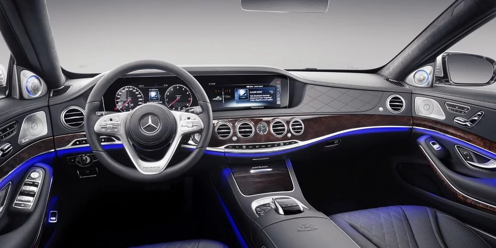

2020 Mercedes-Benz S-Class due with Level 3 driverless tech Luxury saloon is still almost two years off, but incremental changes in self-driving technology, drivetrains and interior tech are all expected Mercedes-Benz S-Class Mercedes-Benz S-Class Mercedes-Benz S-Class Mercedes-Benz S-Class Mercedes-Benz S-Class Mercedes-Benz S-Class Mercedes-Benz S-Class Mercedes-Benz S-Class Mercedes-Benz S-Class Mercedes-Benz S-Class 2020 Mercedes-Benz S-Class tests in production bodywork for the first time2020 Mercedes-Benz S-Class tests in production bodywork for the first time2020 Mercedes-Benz S-Class tests in production bodywork for the first time2020 Mercedes-Benz S-Class tests in production bodywork for the first time2020 Mercedes-Benz S-Class tests in production bodywork for the first time2020 Mercedes-Benz S-Class tests in production bodywork for the first time2020 Mercedes-Benz S-Class tests in production bodywork for the first time2020 Mercedes-Benz S-Class: more autonomy, electrification and space2020 Mercedes-Benz S-Class: more autonomy, electrification and space2020 Mercedes-Benz S-Class: more autonomy, electrification and space2020 Mercedes-Benz S-Class: more autonomy, electrification and space2020 Mercedes-Benz S-Class: more autonomy, electrification and space2020 Mercedes-Benz S-Class: more autonomy, electrification and space2020 Mercedes-Benz S-Class: more autonomy, electrification and space2020 Mercedes-Benz S-Class: more autonomy, electrification and space Mercedes-Benz S-Class Mercedes-Benz S-Class Mercedes-Benz S-Class Mercedes-Benz S-Class Mercedes-Benz S-Class Mercedes-Benz S-Class Mercedes-Benz S-Class Mercedes-Benz S-Class Mercedes-Benz S-Class Mercedes-Benz S-Class 2020 Mercedes-Benz S-Class tests in production bodywork for the first time2020 Mercedes-Benz S-Class tests in production bodywork for the first time2020 Mercedes-Benz S-Class tests in production bodywork for the first time2020 Mercedes-Benz S-Class tests in production bodywork for the first time2020 Mercedes-Benz S-Class tests in production bodywork for the first time2020 Mercedes-Benz S-Class tests in production bodywork for the first time2020 Mercedes-Benz S-Class tests in production bodywork for the first time2020 Mercedes-Benz S-Class: more autonomy, electrification and space2020 Mercedes-Benz S-Class: more autonomy, electrification and space2020 Mercedes-Benz S-Class: more autonomy, electrification and space2020 Mercedes-Benz S-Class: more autonomy, electrification and space2020 Mercedes-Benz S-Class: more autonomy, electrification and space2020 Mercedes-Benz S-Class: more autonomy, electrification and space2020 Mercedes-Benz S-Class: more autonomy, electrification and space2020 Mercedes-Benz S-Class: more autonomy, electrification and space Sam Sheehan by Sam Sheehan 6 July 2018 Mercedes-Benz is working on Level 3 autonomous technology to be fitted to the next S-Class that will enable it to handle complicated road scenarios without human input. The Audi A8 and BMW 7 Series rival, set for reveal at the Frankfurt motor show before arriving in showrooms in 2020, will evolve Mercedes' Distronic Active Proximity Control and Active Steer Assist systems to achieve its most advanced autonomous mode yet. The current S-Class can achieve Level 2 autonomy but is expected to eventually be upgraded again with Drive Pilot capabilities, which link to GPS satellites and are featured on the new E-Class. The new 2020 model is therefore expected to introduce near-fully autonomous capabilities. Mercedes driver assistance systems boss Christoph von Hugo told Autocar earlier this year that 2020 would see some Mercedes cars able to handle “critical situations”, such as urban streets and junctions. The S-Class’s role as the brand’s most luxurious model makes it the top candidate to get this tech first. The upcoming S-Class will benefit from the new MBUX infotainment system first installed on the latest A-Class, alongside a host of other technological updates to give the car a digitalised cabin able to fight against similarly advanced systems from Audi and BMW. Voice control technology will enable commands to be spoken in conversational form rather than via pre-determined phrases. The car will also feature gesture control to enable contactless adjustments to ancillary operations.
 The current S-Class offers a host of different interior lighting options and Sinkwitz said this will continue in the next-generation flagship. As he explained, “There are more opportunities than we currently have.” Sinkwitz went to say we can expect the company to make great use of direct and indirect light as well as ambient lighting. He also suggested the color changing air vents from the A-Class could make their way to the range-topping sedan. Faster, more maneuverable and more efficient While we haven’t heard any rumblings regarding the W223’s engine range, we expect it to feature multiple petrol and diesel units, as well as plug-in hybrid and fully-electric versions, where the latter will probably arrive sometime after the official launch. Whatever Mercedes decides to do with regards to engines, they will surely be more fuel efficient and probably more powerful than the current ones. Another interesting point is the fact that Mercedes have been seen testing 2020 S-Class mules with rear axle steering, which means the production models will probably get the technology too – something Audi has already implemented on their latest A8 flagship. Regardless of when the all-new W223 S-Class breaks cover, the car isn’t expected in showrooms until the year 2020.
What It Is: Mercedes-Benz’s nascent next-generation S-class sedan, captured here wearing a minimum of camouflage and what could be the production bodywork. The current S-class was introduced for 2014, so it’s due for a total redesign—particularly given that most of the other models in Mercedes’s lineup are younger. Why It Matters: Each new S-class generation establishes the brand’s newest styling and technological direction for the rest of the lineup, and this one will be no different. Our sources in Stuttgart indicate that the new S-class’s interior will be seriously upgraded—likely incorporating even more technology—although we struggle to imagine how Mercedes could make the environment any more plush. However the automaker reinvents that wheel, expect its look and capabilities to trickle down to lesser Mercedes cars and SUVs.